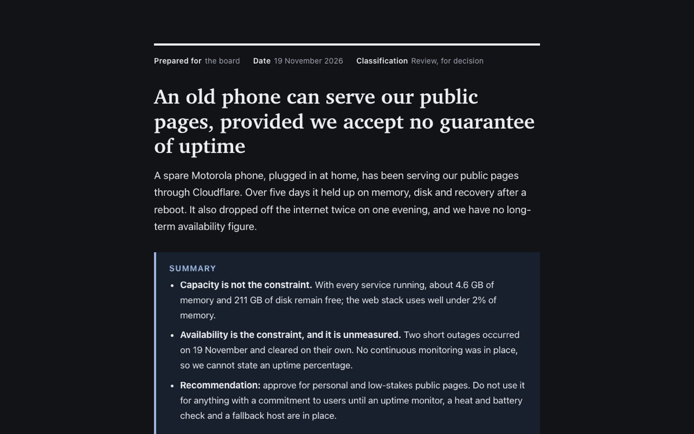
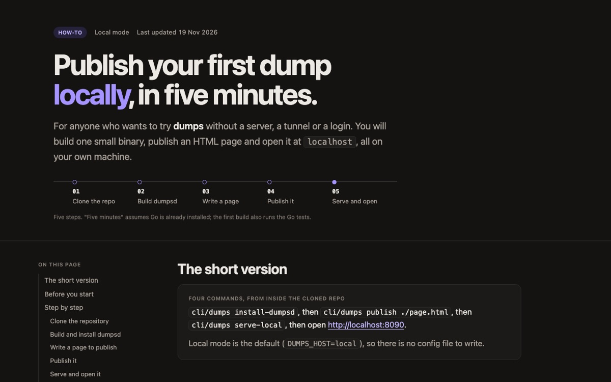
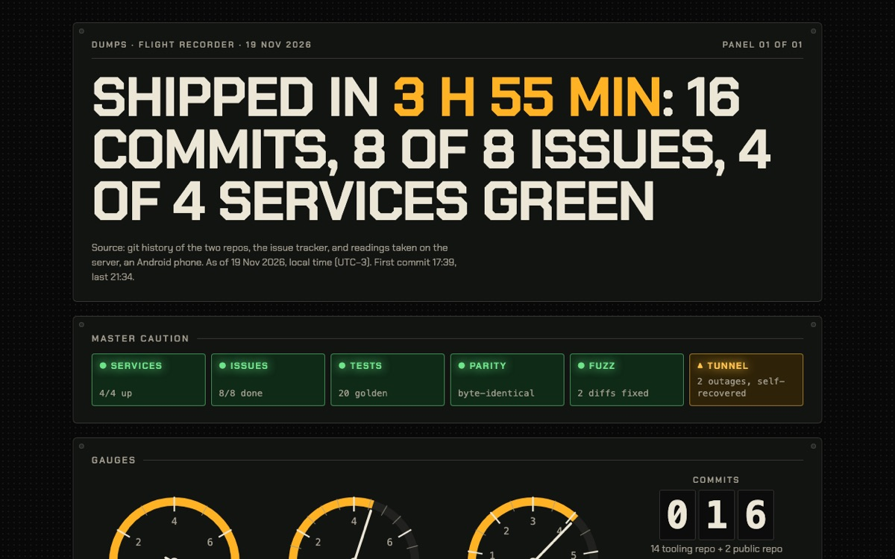

Report1 · Classic by a senior analyst Can an old phone serve our public pages?/dump-this conservative report for the board: is an old Android phone reliable enough to serve our public pages?

Doc2 · Refined by a technical writer Publish your first dump locally, in five minutes/dump-this clean how-to: publish your first dump locally in 5 minutes
 Changelog2 · Refined
by a release manager
dumps launch day: first publish to open source in 3 h 55 min
Changelog2 · Refined
by a release manager
dumps launch day: first publish to open source in 3 h 55 min
/dump-this elegant changelog of everything that shipped on launch day
 Slides3 · Bold
by a presentation coach
dumps, a meetup pitch in 7 slides
Slides3 · Bold
by a presentation coach
dumps, a meetup pitch in 7 slides
/dump-this pitch dumps in 7 slides for a meetup
 Comparison3 · Bold
by a decision advisor
Cloudflare takes the admin seat, Tailscale takes the shortcut
Comparison3 · Bold
by a decision advisor
Cloudflare takes the admin seat, Tailscale takes the shortcut
/dump-this compare the ways to put my dumps on the internet, make it look like a newspaper front page
 Landing3 · Bold
by a product marketer
dump-this: pages that look made, not generated
Landing3 · Bold
by a product marketer
dump-this: pages that look made, not generated
/dump-this landing page for the dump-this skill, Swiss poster style

Dashboard4 · Avant-garde by a data visualization specialist 16 commits, 8 of 8 issues: the day dumps was built/dump-this dashboard of the day dumps was built, go wild: make it an instrument panel
 Story4 · Avant-garde
by a magazine editor
Linha 19: o dumps em um dia
Story4 · Avant-garde
by a magazine editor
Linha 19: o dumps em um dia
/dump-this a história do dumps em um dia, inovação máxima